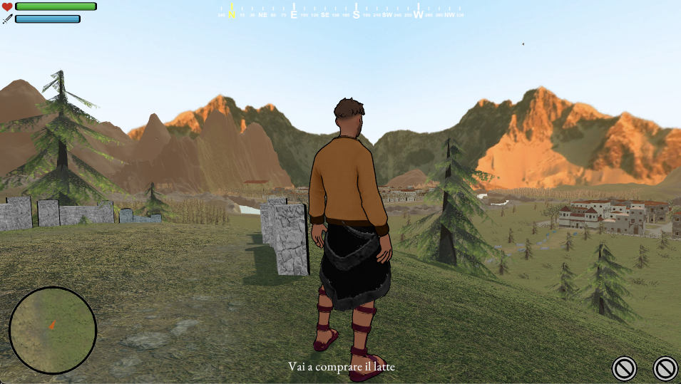

Adiacent Cagliari Esperienza full stack principalmente focalizzata sul lato front-end. La maggior parte dei progetti su cui ho lavorato erano basati su AEM Sites e AEM Forms.
2019 -> OggiFreelancing Ho lavorato per vari individui, aziende e privati, su progetti incentrati in ambienti diversi tra cui:
Freelancing Ho lavorato su commissione per una start-up incentrata sul mercato del lavoro, dalla creazione di branding, design language al layout del loro prodotto e pagine web.
2020 -> 2024Università Creazione progetto per il corso di Interazione Uomo-Macchina, focalizzato sugli studi di usabilità e euristiche grafiche. Inoltre all’università ho avuto modo di lavorare su diversi progetti incentrati sul creare applicativi e, di conseguenza è stato necessario curarne la parte grafica.
Università Creazione progetto per il corso Video Game Design, incentrato sulla creazione, da zero, di un videogioco in Unity, applicando concetti di level-design e modellazione 3D.
